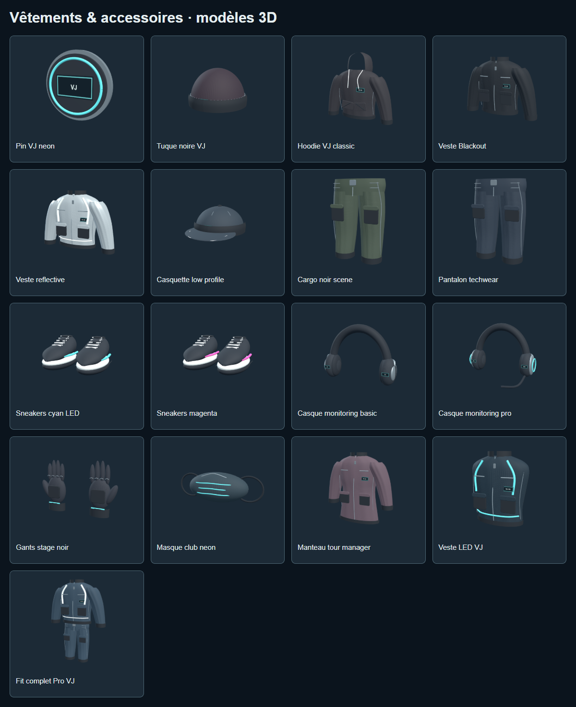

VJ SIMULATOR / APERÇUTon niveau ouvre de nouvelles images.
Les anciens clips restent dans ta bibliothèque. Compare les collections en mouvement, puis regarde les vêtements et accessoires.
17 modèles retravaillés
Volumes arrondis, détails de confection, matières sombres et accents lumineux. Les vignettes sont des vues des modèles du catalogue, également disponibles avec « Voir en 3D ».
